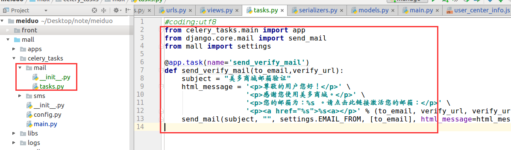
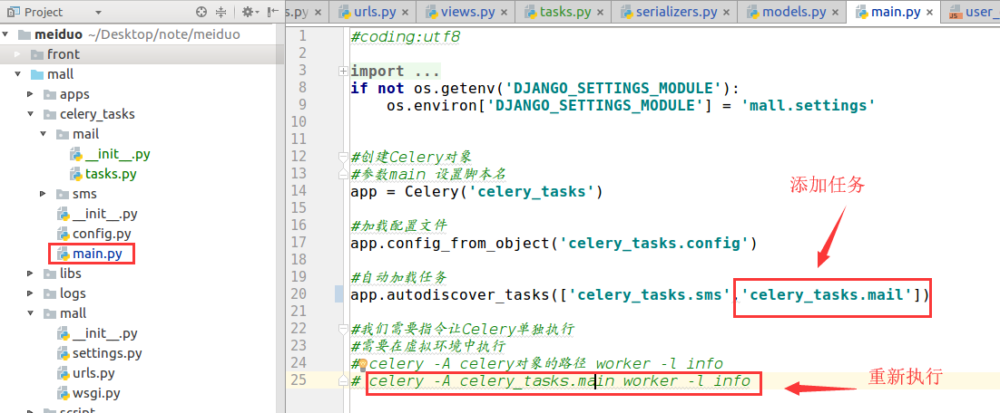
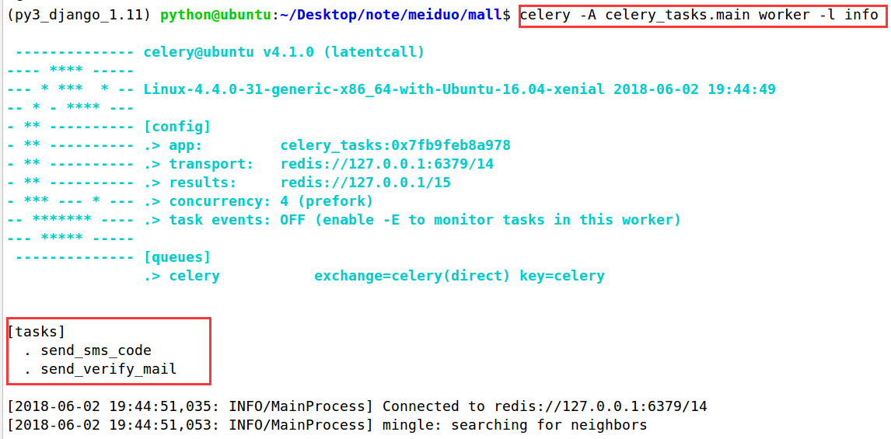

保存邮箱并发送验证邮件
后端接口设计：
请求方式：PUT/users/emails/
请求参数：
| 参数 | 类型 | 是否必须 | 说明 |
|---|---|---|---|
| str | 是 | Email邮箱 |
返回数据：
| 返回值 | 类型 | 是否必须 | 说明 |
|---|---|---|---|
| id | int | 是 | 用户id |
| str | 是 | Email邮箱 |
在users/views.py中创建新视图，用于保存用户的邮箱信息，注意需要用户登录通过认证后。
from rest_framework.permissions import IsAuthenticated
from rest_framework.generics import UpdateAPIView
from .serializers import EmailSerializer
class EmailView(UpdateAPIView):
"""
保存邮箱
PUT /users/emails/
"""
permission_classes = [IsAuthenticated]
serializer_class = EmailSerializer
def get_object(self):
return self.request.user
在users/serializers.py中新建序列化器，用户验证用户提交的邮箱信息。
class EmailSerializer(serializers.ModelSerializer):
"""
邮箱序列化器
"""
class Meta:
model = User
fields = ('id','email')
extra_kwargs = {
'email':{
'required':True
}
}
def update(self, instance, validated_data):
email = validated_data['email']
instance.email = validated_data['email']
instance.save()
return instance
在users的应用的urls中设置路由信息
urlpatterns = [
...
#PUT /users/emails/
url(r'^emails/$',views.EmailView.as_view(),name='send_mail'),
]
补充发送验证邮件
在保存邮箱的时候，需要向用户发送验证邮件，我们将发送邮件的工作放到celery中异步执行。
在celerytasks目录中新建email目录和`email/_init.py文件和email/tasks.py`文件
在email/tasks.py文件中是实现发送邮件的异步任务
from celery_tasks.main import app
from django.core.mail import send_mail
from mall import settings
@app.task(name='send_verify_mail')
def send_verify_mail(to_email,verify_url):
subject = "美多商城邮箱验证"
html_message = '<p>尊敬的用户您好！</p>' \
'<p>感谢您使用美多商城。</p>' \
'<p>您的邮箱为：%s 。请点击此链接激活您的邮箱：</p>' \
'<p><a href="%s">%s<a></p>' % (to_email, verify_url, verify_url)
send_mail(subject, "", settings.EMAIL_FROM, [to_email], html_message=html_message)

注意
在发送邮件的异步任务中，需要用到django的配置文件，所以我们需要修改celery的启动文件main.py，在其中指明celery可以读取的django配置文件，并且注册添加email的任务
from celery import Celery
#进行Celery允许配置
# 为celery使用django配置文件进行设置
import os
if not os.getenv('DJANGO_SETTINGS_MODULE'):
os.environ['DJANGO_SETTINGS_MODULE'] = 'mall.settings'
#创建Celery对象
#参数main 设置脚本名
app = Celery('celery_tasks')
#加载配置文件
app.config_from_object('celery_tasks.config')
#自动加载任务
app.autodiscover_tasks(['celery_tasks.sms','celery_tasks.mail'])
#我们需要指令让Celery单独执行
#需要在虚拟环境中执行
# celery -A celery对象的路径 worker -l info
# celery -A celery_tasks.main worker -l info

重新执行 任务

在User模型类中定义生成验证邮箱链接的方法
from django.db import models
from django.contrib.auth.models import AbstractUser
from itsdangerous import TimedJSONWebSignatureSerializer as Serializer,BadData
from mall import settings
# Create your models here.
class User(AbstractUser):
"""用户模型类"""
...
def generate_verify_email_url(self):
serializer = Serializer(settings.SECRET_KEY,3600)
#加载用户信息
token = serializer.dumps({'user_id': self.id, 'email': self.email})
#注意拼接的过程中对 token进行decode操作
verify_url = 'http://www.meiduo.site:8080/success_verify_email.html?token=' + token.decode()
return verify_url
修改EmailSerializer序列化器的update方法，增加发送邮件
def update(self, instance, validated_data):
email = validated_data['email']
instance.email = validated_data['email']
instance.save()
#发送激活邮件
#生成激活链接
verify_url = instance.generate_verify_email_url()
#发送,注意调用delay方法
send_verify_mail.delay(email,verify_url)
return instance
前端
修改user_center_info.js文件，增加save_email方法
// 保存email
save_email: function(){
var re = /^[a-z0-9][\w\.\-]*@[a-z0-9\-]+(\.[a-z]{2,5}){1,2}$/;
if(re.test(this.email)) {
this.email_error = false;
} else {
this.email_error = true;
return;
}
axios.put(this.host + '/users/emails/',
{ email: this.email },
{
headers: {
'Authorization': 'JWT ' + this.token
},
responseType: 'json'
})
.then(response => {
this.set_email = false;
this.send_email_btn_disabled = true;
this.send_email_tip = '已发送验证邮件'
})
.catch(error => {
alert(error.data);
});
}